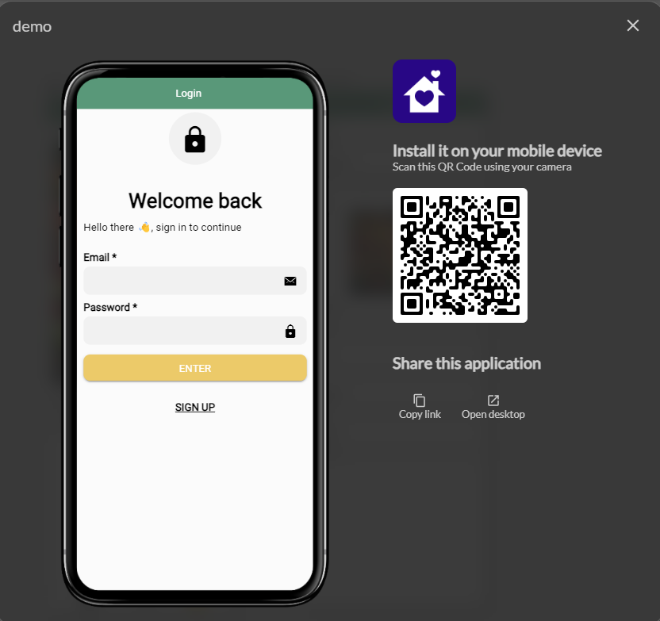

Publications
Vous pouvez publier votre application à tout moment même si votre application n’est pas complètement terminée et opérationnelle
Publier votre application
La processus de publication est accessible depuis la barre principale. Il permet de publier rapidement une application et de la rendre immédiatement accessible pour les utilisateurs
L'application peut être téléchargée sur un téléphone via le QR code affiché, ou ouverte en mode desktop sur un PC ou un Mac. De plus, l'URL de l'application peut être copiée pour être partagée plus facilement.

Écran de partage
Téléchargement via QR code
Une fois l'application publiée, un QR code unique est généré. Les utilisateurs peuvent scanner ce code avec la caméra de leur téléphone pour télécharger et installer l'application directement sur leur appareil

Cette méthode est rapide et ne nécessite pas d'accès à un store d'applications (comme Google Play ou l'App Store) pour effectuer l'installation
Accès en mode desktop
L'application peut également être ouverte et utilisée en mode desktop sur un PC ou un Mac. Cela permet de tester ou de parcourir l'application sur un écran plus large
Le bouton "Open desktop" présent à l'écran permet d'ouvrir directement l'application sur un navigateur compatible avec un ordinateur
Partage de l'URL
Un bouton "Copy link" permet de copier l'URL de l'application dans le presse-papier. Cela facilite le partage du lien avec d'autres utilisateurs, que ce soit par email, message, ou réseaux sociaux
Ce lien redirigera les utilisateurs vers l'application, soit sur leur mobile, soit sur leur ordinateur, en fonction de l'appareil utilisé
Utilisation d'un domaine personnalisé (Custom Domain)
Si l'application a configuré un custom domain (domaine personnalisé), l'URL générée pour le partage sera celle du domaine personnalisé au lieu d'une URL générique fournie par défaut
Cette fonctionnalité est utile pour marquer l'application avec un domaine de confiance, offrant ainsi une meilleure reconnaissance et crédibilité
Pour utiliser un domaine personnalisé, assurez-vous que le domaine est bien configuré dans les paramètres de votre application. Cela garantit que l'URL partagée utilisera ce domaine au lieu de l'URL par défaut générée par le système.